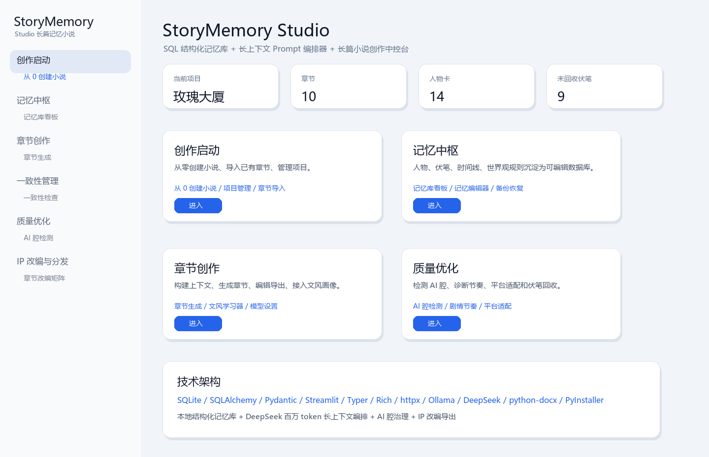
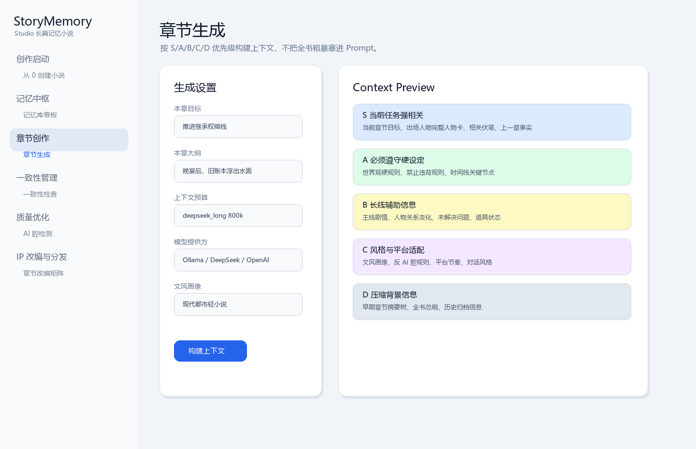
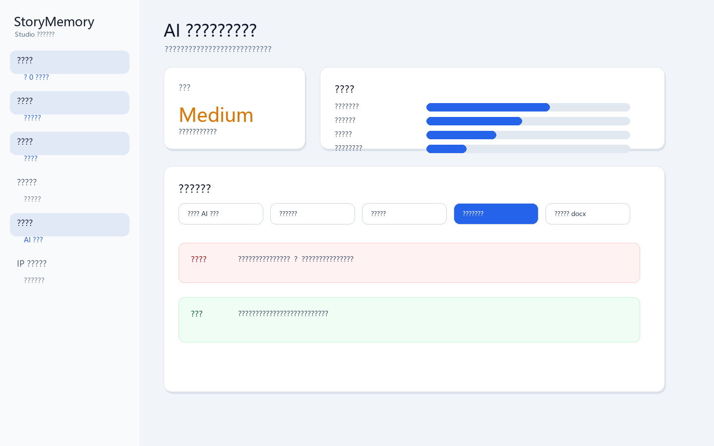

AI long-form fiction that remembers its own story.
StoryMemory Studio is a local-first AI writing control center for web novels, short drama scripts, comics, and IP development. It combines structured story memory, long-context prompt orchestration, consistency checks, AI-tone cleanup, and docx export.
一个面向长篇小说和 IP 创作的本地中控台：人物、伏笔、时间线、章节事实进入 SQLite 记忆库，再由 Context Builder 按优先级喂给 DeepSeek、GLM-5.2、Ollama 或 OpenAI-compatible 模型。

Built for long stories, not one-shot chapters.
The goal is not to paste the whole novel into a prompt. The goal is to make the right facts easy to retrieve, inspect, edit, and reuse.
SQL Story Memory
Characters, relationships, world rules, foreshadows, timeline events, chapter facts, style profiles, forbidden rules, and unresolved questions.
Context Builder
S/A/B/C/D priority layers for chapter goals, hard settings, recent facts, style rules, and compressed background.
Create Novel Wizard
Start from a small seed and generate a project Bible, main cast, world rules, foreshadows, timeline, first 10 outlines, and first chapter draft.
AI Tone Governance
Detect template sentences, vague emotion, reasoning leakage, exposition dumps, and then repair or novelize the chapter.
Model Flexibility
Use local Ollama, DeepSeek, GLM-5.2 / Z.ai, OpenAI, or OpenAI-compatible gateways.
IP Adaptation
Convert chapters into comic storyboards, short-drama scripts, video shots, Xiaohongshu copy, poster prompts, and character cards.
Long-context memory strategy
DeepSeek-style million-token context is powerful, but StoryMemory Studio treats SQLite as the fact source and long-context models as reasoning engines.
S Priority
Current chapter goal, outline, current cast cards, current location, relevant foreshadows, previous chapter, recent summaries.
A Priority
Hard world rules, ability rules, timeline nodes, forbidden contradictions, confirmed facts.
B/C/D Priority
Long-line plots, unresolved questions, item states, style profiles, platform rules, and compressed archive summaries.
Interface preview

Context Builder: structured prompts instead of raw text dumping.

AI Tone Detector and Novelization tools for less mechanical prose.
Install and run
For ordinary users, download the exe. For developers, clone the repository and run the Streamlit UI locally.
git clone https://github.com/Jackeyhate9/StoryMemory-Studio.git cd StoryMemory-Studio python -m venv .venv .\.venv\Scripts\activate pip install -r requirements.txt python run_ui.py